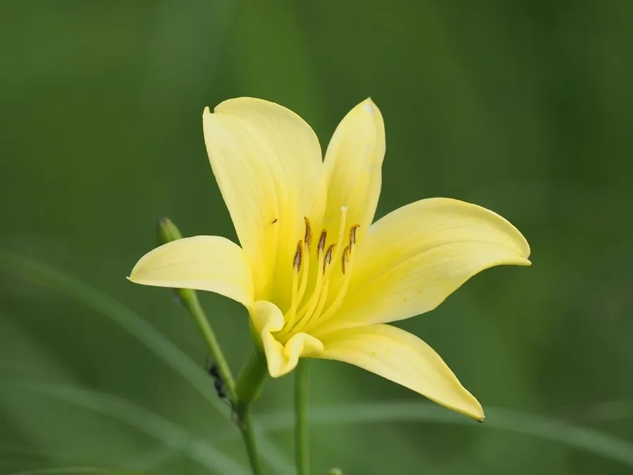

农作物与经济植物 · 植物界
黄花菜 Hemerocallis citrina

黄花菜的花蕾干制后就是“金针菜”，可炖汤和炒食，但鲜花含秋水仙碱，必须充分处理后才可食用。
- 分类
- 门被子植物门纲单子叶植物纲目天门冬目科阿福花科属萱草属
- 栖息环境
- 温暖湿润的山地菜园，耐寒性较强，喜光照充足
- 地理分布
- 原产中国，现中国湖南、山西、甘肃等地广泛栽培
- 保护级别
- 暂无评估（栽培作物）
物种志
黄花菜是阿福花科多年生草本，株高 0.6–1 m，根肉质、纺锤形。叶片线形、丛生，长 30–60 cm。花葶从叶丛中抽出，顶端生数朵至十余朵花，花漏斗状，淡黄色至金黄色，傍晚开放，有香气。果实为蒴果，内含黑色种子。黄花菜以花蕾供食。
黄花菜原产中国，栽培历史已有数千年，是传统的食用与观赏植物。它喜温暖湿润、光照充足，耐寒性较强，适宜在疏松肥沃、排水良好的土壤中种植，多分株繁殖。花蕾在开放前采收，干制后即“金针菜”，可炖汤、炒食、做配菜；鲜黄花菜含秋水仙碱，必须焯水、浸泡或晒干后才能食用，否则会引起中毒。黄花菜也可作园林观赏，花期长、花色美。中国湖南、山西、甘肃等地是主产区。
形态与习性
- 株高0.6–1 m
- 叶线形，丛生
- 花漏斗状，淡黄至金黄
- 采收花蕾开放前采收
- 注意鲜花含秋水仙碱，需处理
趣味知识
- 我们吃的“金针菜”就是黄花菜的花蕾干制品。
- 鲜黄花菜含秋水仙碱，必须焯水、浸泡或晒干后才能吃。
- 黄花菜傍晚开花、有香气，也可作园林观赏植物。